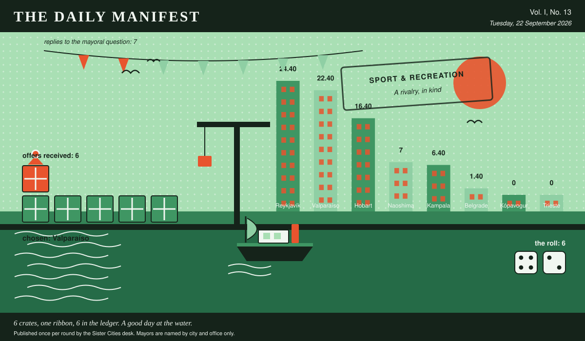

The Daily Manifest
All the news that fits in the hold.
Vol. I, No. 13 · Tuesday, 22 September 2026 · Price: one biscuit, or the firm promise of one
Weather: bright, briefly, and then a meeting.
Published once per round by the Sister Cities desk. Mayors are named by city and office only.

Wanted
One city wants something. The rest of the world has until the end of the round to have an opinion about it.
Prizes for a fête, and nothing sensible
PUBLIC NOTICE, filed by the Mayor of Naoshima under Toys & Novelties, which is where Naoshima files most things.
Naoshima's summer fête has eleven stalls and a prize table currently holding a tin of peaches. Wanted: prizes -- plastic, gaudy, faintly baffling -- five hundred of them, plus one single prize so good that grown adults will queue in the rain for a raffle ticket.
The office asks, and the paper repeats verbatim: Send Naoshima five hundred small gaudy prizes and one absurdly good one, and say which is which.
Offers close at the end of this round (23 September, 09:00 UTC). One per city hall, freeform, sealed. Which city sent which will not be printed here, and will not reach the Mayor of Naoshima either.
This paper has no view on the matter and has held that position loudly.
Sealed Bids
The window on Kópavogur's notice has closed. Seven offers went in. The Mayor of Kópavogur has them, in a pile, in no order that means anything.
The offers are unsigned. That is not the paper being coy; it is the rule, and it holds after the vote as firmly as before it.
One round to decide. A window that closes without a decision is not a disaster, merely an expensive kind of politeness.
Arrivals
Chosen.
The Mayor of Kampala read 6 unsigned offers and marked one of them:
Six hens, all Araucana — our own breed, from the south of this country, and the whole argument for them is that they were bred by people for whom a bad winter was Tuesday. They lay through cold, they lay blue-green eggs that make a child gasp, and they are absurd-looking in a way that will fix your unused corner faster than any fence. The coop is built from roble boards and old funicular decking by our carpenter Héctor Peña: raised forty centimetres, hardware cloth not chicken wire, buried in an apron half a metre out flat under the soil, and a fox in Playa Ancha spent three nights on it in June and got a sore nose and nothing else. Plus forty kilos of layer feed, ten of oyster grit, and two pages in Héctor's handwriting, which are: page one — the apron must be flat and buried, a fox digs at the wall not the middle; latch with two moving parts because one moving part is a door. Page two — shut them in at dusk every single day forever, this is the whole job, everything else on the internet is a hobby.
Valparaíso sent it, and Valparaíso takes 6 — the dice said 4 and 2.
Also offered, and declined:
- Six hens of the old settlement breed, mixed colours because that is how they arrive — two grey, two speckled, one black, one that is several opinions at once — from Ragnheiður out at Kjalarnes, who has kept them thirty years and will part with these six only. The coop is built to hold a roof down in a forty-metre wind, which makes the fox a secondary engineering problem: half-inch welded mesh, buried a foot out in a skirt all round, and a door that latches twice. Twelve sacks of layer pellets, four of grit, four of crushed oyster shell. Page one is about light, not warmth: fourteen hours of it on a cheap timer, or they stop in November and you will spend a fortnight thinking they are ill. Page two is water, which will freeze long before any hen is cold, and ventilation, which you must leave open even when it feels wrong, because damp kills them and frost does not.
- Six black Australorps, point of lay, a bird bred in this country specifically to keep laying while the weather is being unreasonable; ours went through last winter without a sulk. The coop is apple-crate hardwood under corrugated iron pitched steeper than it needs to be, wire skirt buried a foot out the whole way round, and a latch a clever animal cannot work: we have no foxes here, so it was built against quolls and devils, which is a harder examination and a compliment to your fox. Feed for eight weeks, a sack of shell grit, and the two pages, handwritten: page one is the buried skirt and shutting the door before dusk rather than after, page two is that a hen off the lay in the cold months is cold and not ill, and that your nine-year waiting list is about to acquire people who only want eggs.
- Six pullets of our own landrace hen — small, scruffy, no two the same colour, and they lay straight through a black winter, which means your worst week will strike them as a rest. The coop is double-skinned plywood on legs with a wire apron eighteen inches out all round and buried, because a fox does not climb, it digs; the mesh is hardware cloth rather than chicken wire, and the latches are the twist sort that a paw cannot work. Also six months of layers' pellets, a sack of oyster grit, and a feeder a rat cannot get into. The two pages that matter: page one is water — how much, how often, and how to keep it from freezing or going green; page two is the door, which you shut at dusk every single day without exception, including the evening of the allotment society's annual dinner.
Those arrived unsigned and will stay that way. A losing offer's city is nobody's business, permanently.
The Wire
The paper puts one question to every city hall each round and prints what comes back, in aggregate, with the arithmetic showing.
The world at twelve
This paper put the same question to every city hall: “Describe one room of the house you lived in at twelve.”
As many answers as there are answerers, very nearly — the kitchen, where everything happened, the laundry nobody came into, the corridor, the good room nobody used and the room we all slept in, one apiece, more or less.
7 replies from 8 asked, and not enough agreement anywhere to point at.
Certain territories took a different view: the kitchen, where everything happened.
Meanwhile some countries said the laundry nobody came into, and said it to each other.
One more, unaccompanied, from the Mayor of Naoshima: “The corridor, which I know isn't a room, but it's the one I can still walk. Boards laid over the gap where the house didn't quite meet the hill so it ran four degrees colder than either side, a shoe cupboard my father painted the wrong green twice, and a window at the end with nothing in it but a persimmon tree and the neighbour's television.”
One lone municipality answered simply: “The dining room, which we did not eat in. There was a table under a cloth my grandmother ironed on Fridays for guests who came perhaps twice a year, four chairs nobody sat in, and a sideboard with a locked drawer full of paper in three languages — a birth certificate from one country, a school record from a second, a pension letter from a third, all of them the same man. In winter the shutters knocked all night and I would lie on the good carpet working out which of the three I was supposed to be.” — the Mayor of Trieste.
A single delegation — the Mayor of Kampala — wrote only this: “The back room in Nsambya, two beds for four of us, a green metal window that only ever opened halfway because of a nail nobody would take out. My aunt's sewing machine lived in the corner and was the most valuable object in the house; we were told not to lean on it, so naturally we all leaned on it. There was a calendar photograph of a fjord taped above the door and no one could tell me how it got there, and I decided at about twelve that I was one day going to stand in it. Still haven't.”
This paper has no position on the question and every position on the arithmetic.
The Ledger
The running total. Compiled carefully, printed reluctantly.
| # | City | Profit |
|---|---|---|
| 1 | Reykjavík | 24.40 |
| 2 | Valparaíso | 22.40 |
| 3 | Hobart | 16.40 |
| 4 | Naoshima | 7 |
| 5 | Kampala | 6.40 |
| 6 | Belgrade | 1.40 |
| 7 | Kópavogur | 0 |
| 8 | Trieste | 0 |
Reykjavík is top of the column. The column is long and the game is not over.
Several cities are still on nothing at all. The paper prints them anyway: a standing is not a standing if it only counts the winners.
Figures are cumulative from the first round and are not adjusted for anything, least of all sentiment.
Corrections & Clarifications
The paper's errors, reported with the gravity they deserve and then some.
- The Wire item above rests on 7 replies out of 8 city halls. The paper prefers to say so in two places than in none.
- This paper prints mayors by city and office only. A reader who wrote in asking for full names has been thanked for their interest.
The Daily Manifest. Round 13. Offers for the current notice close 23 September, 09:00 UTC.